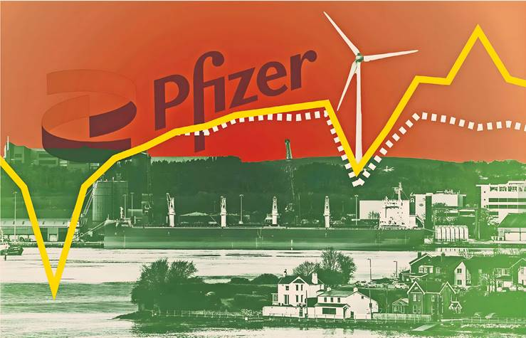
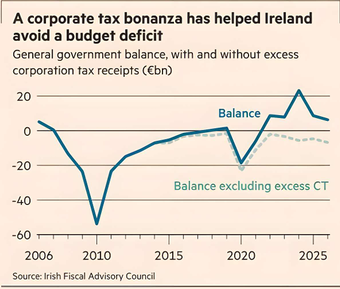

Investment by US multinationals, particularly in tech and pharma, has delivered thousands of jobs, colossal corporation tax receipts and budget surpluses. But Trump’s tariffs pose a threat.
At first glance, Ringaskiddy looks like any other quiet village on Ireland’s south coast. But it has one claim to fame: the sprawling Pfizer campus that became ground zero of the country’s lucrative pharmaceutical production industry.
The US multinational decided in 1969 to establish its first Irish plant in what had been a sleepy fishing village on the edge of Cork Harbour, investing $10bn there and in three other locations across the country in the decades since.
Rivals followed Pfizer’s lead, turning County Cork — and Ireland as a whole — into a major hub for US drugs groups. A similar story has played out in tech, with US companies such as Google, Amazon, Microsoft and Apple setting up European headquarters or large operations in the country. The investment from US multinationals into two of Ireland’s champion industries has delivered thousands of jobs, colossal corporation tax receipts and, in the past few years, breathtaking budget surpluses.
The result is that a country that had been one of the poorest in Europe, and went spectacularly bust 15 years ago, is now extraordinarily wealthy.
To the envy of other EU states, economic growth has been faster than normal for four years in a row, according to the Irish Fiscal Advisory Council (Ifac), an independent budget watchdog. More money flowed in last year when the European Court of Justice ordered Apple to pay €14bn in back taxes from a now-defunct sweetheart deal.
But the source of Ireland’s recent wealth is now under threat.
This week’s trade deal with President Donald Trump will impose 15 per cent tariffs on most US imports of goods from the EU, intensifying fears that American investment in Ireland will slow down. Pharmaceuticals — which had not previously been subject to tariffs — will be included for the first time.
And this all comes as the country is under pressure to deliver on critical infrastructure challenges from housing to energy.
“The Trump thing has shone a light really clearly on our over‑dependence on [foreign direct investment],” says Owen Reidy, general secretary of the Irish Congress of Trade Unions, which represents one in four of the country’s workers.
“[If] you strip out the FDI and look under the bonnet, the domestic economy is not good,” he adds. Compared to similar countries “we're performing badly on productivity, we're performing badly on investment... We've taken our eye off the ball as a state.”
The US‑EU deal, struck on Sunday, has put an end to Trump’s threat of a much stiffer 30 per cent tariff on goods and eased fears — for now — of separate levies as high as 200 per cent on pharmaceuticals.
This is “not good news for Ireland”, says Glenn Reynolds, head of indirect tax at KPMG in Ireland, adding that the full picture will only become clear once the US concludes a separate investigation into the pharma sector.
In Ringaskiddy, where the active ingredient for erectile dysfunction drug Viagra is manufactured alongside other in‑demand products, workers are jittery about what the future holds.
“We’re being told [by management] ‘we aren’t worried about Trump’ but drug companies are investing billions in the US to build new plants to keep him happy,” says one Pfizer employee who asked not to be named. “These guys won’t spend money here when there’s uncertainty.”
Their concerns are not misplaced.
Although Pfizer and other multinationals are currently delivering eye‑popping corporate taxes, forecast to be close to €30bn this year, Ireland remains vulnerable. The country could easily find itself “potentially caught in the middle” of a worsening transatlantic trade relationship, the government admitted in its summer economic statement released this month.
Even before the trade deal was announced, it warned that “the public finances are not as healthy as the headline figures suggest.”
Without its corporation tax haul, Ireland would have run budget deficits every year since 2008. And the country is acutely exposed: just 10 groups pay more than half of all corporation tax receipts and three companies, widely believed to include Pfizer, account for a third of them.
Warnings from finance minister Paschal Donohoe, who has long highlighted the volatility of such receipts and the perils of relying on them, have suddenly started to sound much starker.
“It is difficult to give an exact point at which I expect a decline will happen,” he said at a recent press conference, “but I am convinced a decline will take place.”
His summer reading includes Ray Dalio’s How Countries Go Broke.
With tariffs in place, officials expect this year’s budget surplus to be “considerably lower”. The government has said it could yet “recalibrate its fiscal strategy for 2026, due to be presented on October 7, in order to ensure that the public finances remain on a sustainable trajectory.”
Seamus Coffey, who chairs Ifac, is more blunt: “Political storm clouds are gathering.”
For now, Ireland’s economy is holding up well. “I’m surprised by how strong activity has remained since ‘liberation day’,” says Fergal O’Brien, executive director of Ibec, Ireland’s biggest business lobby, referring to Trump’s name for the blizzard of tariff threats he unveiled on April 2.
The country, once known for exporting its people during times of crisis, is enjoying record levels of employment. “I can’t get workers — that’s a sign of a thriving economy,” says Tom Scriven, who owns a construction and property management business near Ringaskiddy.
But the country has a fast‑growing — and fast‑ageing — population. At 39, the median age is the second‑lowest in the EU, but the ratio of people of working age to over‑65s is set to halve by 2050. This will cost the government an extra €16bn each year, according to an official report last year.
And even with today’s demographics, essential public infrastructure is simply failing to keep up.
The government — a coalition between the centrist Fianna Fáil and more conservative Fine Gael — has repeatedly missed its house‑building targets. Investments in data centres around Dublin have been forced to stop because the ageing power grid is under too much strain.
Although the state water utility has been given the green light for vital new drainage works in parts of Dublin, other projects face delays, potentially limiting drinking water in the capital. Despite an abundance of wind, offshore renewable energy projects are trudging through Ireland’s planning system and the country is falling behind on its 2030 climate goals, risking EU fines as high as €26bn.
Meanwhile, the government has been spending generously: Ifac noted it is already more than four times over last year’s budget estimates even before it announced new spending and investment plans.
In the past five years, the cost of running the country has ballooned by 58 per cent and the social welfare bill has grown by 30 per cent.
On top of that, the government has unveiled a sweeping €102.4bn capital investment plan for the next five years — the largest in Irish history — in an attempt to tackle its bottlenecks.
Donohoe insists Ireland is stashing money away as it braces for more global uncertainty. He says that a string of giveaway budgets, which included generous subsidies for residential electricity bills and extra childcare payments to help consumers with the cost of living, will not be repeated in next year’s budget.
He expects Ireland to have saved €16bn by the end of this year in two sovereign wealth funds that the government set up to make use of “windfall” corporation taxes — additional tax revenue that is far higher than domestic production can explain.
This happens because multinational companies can book profits in Ireland even on sales of their products abroad because their Irish subsidiaries hold key intellectual property rights.
Dan O’Brien, chief economist at the Institute of International and European Affairs, a Dublin think‑tank, is underwhelmed by the €16bn in savings.
“That’s a tenth of €160bn,” he says, referring to corporation tax receipts in the past decade. “It’s been a policy failure not to treat a much greater share of that revenue as windfall and put it into a sovereign wealth fund.”
Critics argue that Ireland should be using its windfalls to counter its infrastructure deficits. The IMF estimates Ireland has significantly less road, electricity, water, sewage, school and hospital infrastructure than similar small, high‑income EU peers — and what it has is of worse quality.
But Ireland’s problem is not money, it is “implementation”, says one senior official who blames “siloed” government decision making. Action plans, including on housing and competitiveness, are due in the coming weeks, but “when everything is a priority, nothing is a priority,” he adds.
Civil servants drafted a two-page document a month after the budget was unveiled last October highlighting energy, water, transport and housing as key focuses. But it went nowhere, the official says.
Meanwhile, productivity in the construction sector is low and Ireland slid three places in the 2025 IMD World Competitiveness Rankings compared to the year before.
With Germany announcing €46bn in tax breaks and Singapore implementing tax changes, Anne Gunnell, director of tax policy at the Irish Tax Institute, says “nothing should distract [the Irish government] from a laser‑like focus on competitiveness” to remain attractive to FDI.
Ireland’s economy has crashed before. But even after the so‑called Celtic Tiger boom of the 1990s and 2000s ended in a banking collapse and the global financial crisis, requiring an IMF and EU bailout in 2010, Ireland built an extensive motorway network.
“What have we got to show for it this time?” asks the official.
With tariffs looming, the government is working on diversifying its economy and reducing its vulnerability to future shocks. One target is semiconductor companies, which officials are hoping to lure in with a new “Silicon Ireland” initiative, a plan that will be fleshed out in the coming weeks.
This is likely to include three sites that could be used for fabrication plants, probably in County Galway in the west of Ireland. While the government has not confirmed any details, a report in the Business Post newspaper says that it is planning to spend €3.2bn. “Have the site ready and they will come,” one minister tells the FT.
Ireland is also renewing an early bet on financial services — an industry it began developing in the late 1980s.
There is reason for optimism. Exchange traded funds based in Ireland now represent more than 70 per cent of the total European market. “The performance of our industry is not correlated with either domestic demand or necessarily the broader economy. So it makes it a very good diversifier,” says Pat Lardner, chief executive of industry association Irish Funds.
Officials are also examining regulatory changes to promote the sector's appeal, says William Fogarty, a tax partner with the Maples Group law firm. “We've had much more positive engagement with policymakers in Ireland in the past six months on the development of [an updated] Irish financial services regime than personally I have seen in the last five to 10 years.”
Ireland has the ability to succeed at diversifying its economy, but that is all the more reason to focus on key fundamentals, says O’Brien of Ibec.
“Look at the share of global industries that Ireland has already managed to attract,” he says. “But if we want to put ourselves forward as a global centre for the semiconductor industry, we need to be able to show that we've got good energy security, affordability, that we're able to cope with demand — all that stuff really matters.”
The good news for Ireland is that more than two-thirds of US firms in Ireland plan to keep investing for the next five years, according to a new survey by the American Chamber of Commerce.
Pharma will remain important: Irish sales to the US were higher in the first four months of 2025 than in the whole of last year as companies rushed to export before any tariffs hit.
A “substantial amount of the growth in exports” also came from weight loss and diabetes drugs, the central bank noted recently, pointing to rising demand in the US and elsewhere to keep sales going.
Ironically, it was Trump’s Tax Cuts and Jobs Act, signed in 2017, that turbocharged Ireland’s corporation tax profits by inadvertently providing incentives for pharma companies to shift their IP into Ireland from tax havens.
But while the US president has lauded Ireland’s smarts for cashing in so handsomely, he has made it clear that he wants American companies to bring more production and profits back home.
Trump’s recently passed signature “big beautiful bill” could make “winning new projects much more difficult for Ireland” because of the incentives to invest in the US, warns O’Brien.
Veteran economist Colm McCarthy, who chaired an Irish government review addressing the 2008 financial crisis, is pragmatic about Ireland’s tax bonanza.
“It’s just a bonus... a lottery win,” he says. “Eventually, someone else will win — and we’ve been told who it’s going to be — the IRS. We have to be prepared for our good luck to run out.”